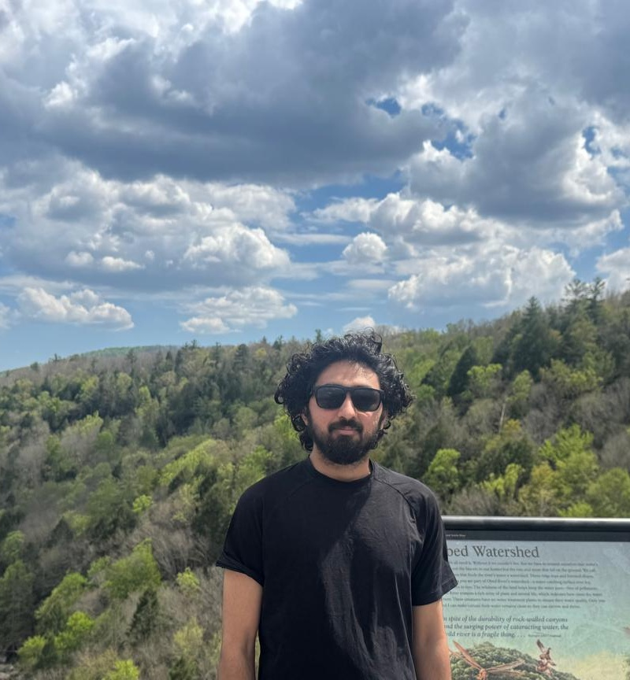

Loading post…
Sanskar Amgain
PhD Student, University of Tennessee, KnoxvilleHello there, I'm a PhD student in Computer Science at the University of Tennessee, Knoxville, advised by Dr. Suya. I completed my Bachelor's in Computer Engineering at Pulchowk Campus, Institute of Engineering, Nepal. Before starting my PhD, I worked as a Research Assistant at the Multimodal Learning Lab under the supervision of Dr. Binod Bhattarai.
My research lies at the intersection of machine learning and security. I work on hardware-model attacks that jointly target both the model and its deployment stack, watermarking techniques for tracking model ownership and provenance, and the adversarial robustness of deployed ML systems.
Research Interests: ML Security, Hardware-Model Attacks, Model Watermarking, Adversarial Robustness

Selected Publications
Loading publications…
My Blog
Loading posts…
Loading publications…